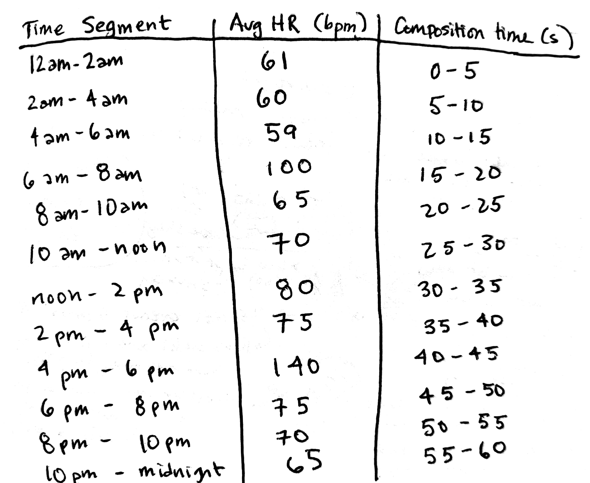

Recipes For Breaking Data Free
...do you ever feel like your data doesn't belong to you?
This design project explores how the specific, pre-defined ways our personal biometric data is served to us hinder — or enhance — our ability to find meaning in that data. Through a series of recipes for novel data interactions and sample performances of those recipes, it presents alternative modes for experiencing our own data.

Performances
Voicing A Heartbeat
(Recipe #2) This data sonification presents 24-hours of heartbeat data compressed into a single minute. Each 5 seconds corresponds to a 2-hour segment of time, with the average heartbeat from that segment performed. The "badump" sound was created with my voice and by tapping the microphone. The background noise is from an actual heartbeat recording (done with a stethoscope) by Freesound.org user Benboncan, shared with a Creative Commons (CC BY 3.0) license.
Quarter-Stepping
(Recipe #4) This data sonification presents 24-hours of step data compressed into 30 seconds. Steps have been converted into cents, with 25 cents (one quarter coin) representing 25 steps. Each 15-minute period corresponds to one discrete instance of stacks of quarters dropping. Quarters were dropped in groups of 1, 2 or 4. For example, if I walked 253 steps between 6:00 am and 6:15 am, you would hear two 4-quarter stacks and one two-quarter stack dropping, layered on top of each other but slightly staggered.
Heartbeat Duet
(Recipe #2 and Recipe #3) This sonification, performed by me and my mom, Rebecca Wirfs-Brock, juxtaposes two peoples' heart rate data for the same day, compressed into a one-minute audio performance. It was recorded asynchronously and then edited together. In this version, you can also hear Rebecca saying the time intervals so you can track what time of day it is.
Recipes
You can also view the recipes as a Google Doc.
Recipe 1: Reformatting Your Data
Skill level: Intermediate to Advanced
Time needed: 30 minutes to 4 hours
Ingredients: Garmin device and Garmin Connect account; computer; grit
Log in to your personal dashboard at connect.garmin.com.
Poke around and look at how your data is displayed.
From one of the dashboard views, click on the small, grey gear icon in the top right. (Note: depending on when you read this, and on what device you are viewing your data, it may be in a different location, or not exist at all.)
Select “Export original.” (Note: It’s easy to accidentally select “Delete.” You may do this instead, if you like.)
Look at the file download. It is a .zip file.
Unzip the file. Now look at it. It’s a .fit file.
Spend some time doing internet research on how to convert .fit to .csv or other more standard data formats. Here are some sample queries you might use:
- .fit file format
- converting .fit to gpx
- How to convert .fit format into CSV
Here are some web pages that might be useful -- or they might not, depending on when you read this:
- GPSies | GPS, Tracks, Trails, Tours, Routes, Converter
- Converting Garmin FIT Files to CSV
- GitHub - dtcooper/python-fitparse: Python library to parse ANT/Garmin .FIT files
- Exporting Garmin .fit files to Excel .csv files
- Garmin Forums
- Software Tools - THIS IS ANT
- Do there are a way to export data from .fit to .cSV (detailed data not intervals) : Garmin
- FIT SDK 20.78.00 - THIS IS ANT
Download and install the FIT SDK.
Poke around for a while trying to figure out what all the files mean. Eventually discover the “Introductory Guide.”
Open a Terminal window. Navigate to the directory where you’ve installed the FIT SDK. (If you don’t know how to do these things, you’ll need to look up recipes for these.) Type this line and hit enter:
- java -jar FitCSVTool.jar
See an error. Install a Java runtime SDK and repeat the previous step.
Type this line into the Terminal and hit enter:
- java -jar FitCSVTool.jar -b
Note that a new CSV file appears in your Finder. Pause for a brief celebration!
Open the CSV file. Examine it for 30 minutes to 2 hours. Realize that the timecodes need to be reformatted.
Recipe 2: Voicing A Heartbeat
Skill level: Beginner to Advanced
Time needed: 45 minutes
Ingredients: Garmin device and Garmin Connect account; audio recording device; metronome (or ability to conjure one up on the web); something to write with; audio editing software like Audition, Audacity or Garageband (optional)
In this recipe, you’ll create a sonic composition that represents a single day of heart rate data compressed into one minute, performed by a human.
Log in to your personal dashboard at connect.garmin.com.
Browse your data by looking at the “Timeline” feature. Pick a day to focus on — it can be an important day or a mundane day, a wonderful day or an awful day.
Examine each two-hour period, starting with midnight to 2 am, and estimate your average heart rate in that 2 hour window. You may find it easier to do this if you use the zoom feature:
Write this down in a chart or table — you’ll need it soon. It’s ok if this is approximate, or you aren’t sure if you are eyeballing the average correctly. It’s also ok if you want to try to calculate this from the data you extracted in Recipe 1. Do this until you reach 10 pm - midnight.
Here’s an example:

Figure out a way to create a heartbeat sound. Some suggested ways to do this:
- With your voice (“ba-dump, ba-dump, ba-dump”)
- By tapping a ba-dump rhythm rhythm — you can experiment with different materials
- Advanced: Get a stethoscope. Manipulate your cardiovascular system to achieve the desired heart rate.
Perform the heart rate for each two-hour period. You can use a metronome as a guide (like this one). Tip: If you pipe the metronome through earbuds, you won’t record its sound. (Of course, you may want to capture the sound of the metronome.)
For each two-hour segment, record at least 5 seconds of audio. Optional: Before each segment, state the heart rate in bpm.
For beginning practitioners, you can edit this audio together into a one-minute audio piece.
For advanced practitioners, this piece can also be performed live.
This recipe can be performed so, as a duet or as an ensemble.
Recipe 3: Gathering Data From Others
Skill level: Beginner
Time needed: 10 minutes to 1 hour
Ingredients: friend or family member with a fitness tracker
Contact the person whose data you would like to see.
Ask them to send you their data, perhaps as a series of screenshots.
When you finally get the screenshots, they may or may not be what you expected. For example, they could be:
- A different type of data than you intended (dashboard v. timeline)
- Lacking a clear y-axis
Go back and forth while you try to explain exactly what you mean and what data you are hoping to obtain. Together, see if you can make this data exchange happen. This step can extend indefinitely.
Recipe 4: Quarter-stepping Through Your Data
Skill level: Intermediate
Time needed: 2 hours
Ingredients: Garmin device and Garmin Connect account; quarters or other coins (at least 4); audio recording equipment (a phone will do); audio editing equipment
In this recipe, you’ll create a sonic composition that represents a single day of steps data, performed by a human, and represented through coins.
Log in to your personal dashboard at connect.garmin.com.
Browse your data by looking at the “Step Details” feature. Pick a day to focus on — it can be an important day or a mundane day, a wonderful day or an awful day.
You are going to representing steps as the sound of a stack of quarters dropping. A recommended conversion rate is one step = one cent, thus 100 steps = a stack of 4 quarters, 50 steps = a stack of 2 quarters, and 25 steps = a single quarter.
It is recommended that beginners create this composition by recording the sounds of 25 steps, 50 steps, and 100 steps. These can then be combined, through audio editing, into any number of steps (with a resolution of 25 steps). Advanced users can consider performing this recipe live, but should note that this will require many more quarters.
You may find it helpful to convert your steps into a list of steps per 15-minute interval. Here is an example:
You can then use this as a guide to create a series of stack drops with the corresponding number of quarters. Don’t forget to include the intervals where you didn’t take any steps.
Report
Introduction
The rise of smartwatches outfitted with biometric sensors, like Garmins and Fitbits, has brought the quantified self movement from the fringes to the mainstream. As it becomes easier for us to measure and log personal data — how fast our hearts beat, how deeply we sleep, how moist our skin is — how do we find meaning in this data? How is that data represented, and how will those representations influence the way we relate to ourselves, others, and the world around us? We often feel compelled to ascribe power and authority to data, while forgetting that data’s power ultimately comes from our own interpretations of it. Oft-hidden decisions about what we chose to measure and analyze dictate the meaning data brings to our lives.
I’m interested in this topic as a human and a runner who tracks my own biometric data using a Garmin watch (a Forerunner 235). Confession time: I’m a bit obsessed with my data — for example, every morning when I wake up, the first thing I do (before going to the bathroom, before checking my phone) is see what my resting heart rate was for the previous day. Yet I’m not sure if having access to this data actually contributes to a deeper understanding of my own personal health. In a world saturated with information, many people still find it difficult to uncover meaning in data. I’m an experienced data analyst with quantitative skills, yet even I have trouble finding insight in the wealth of data I am collecting about myself.
This project uses a series of design explorations to examine these issues around how we represent personal data. Initially, my goal was to use methods around leveraging materials to explore how we represent personal data. By thinking of sound as a material, I hoped to create sonic representations of data that help us explore how our interpretations of data are entangled with form and context. My plan was to build a data alarm clock that leveraged sound as a material.
However, as I began to extract my data from the Garmin dashboard into a form I could manipulate, I felt like the system I was interacting with — Garmin’s system — didn’t want me to do anything truly personal with my own data. I was restricted to very specific, defined ways of consuming my data, and experienced frustration with my inability to access and manipulate my own data freely. To interrogate this aspect of personal biometric data, I decided to create a series of recipes for breaking data free that highlight how difficult it is to interact with your own data in ways that aren’t pre-defined by the companies that mediate personal data collection. I performed these recipes, creating data sonification artifacts. I also asked another person to perform one of the recipes.
These recipes for breaking data free expose the tradeoffs we make when we allow our personal data to be brokered by companies like Garmin — we exchange the frustration and hidden labor of data analysis and representation for a pre-defined yet limited view of our biometric data.
Background:
This project draws inspiration from previous design and research work in the areas of information visualization, ludic design, performance art, and data sonification.
Many design projects have also explored the role of information visualizations in embedded everyday contexts and their relationship to behavioral change. One example is the area of eco-visualizations (EVs), which include physical designs for exposing real-time electricity consumption. As summarized by Pierce, Odom and Blevis [9], EV projects like the Power-Aware Cord — which employs glowing, changing pulses of light and “is designed to visualize energy, as opposed to hiding it” — can inspire critical reflection, “which encourages reflection on technology itself, the way it conditions behaviour and the ideological assumptions embedded in it.”
Designs for ludic activities, where people “[act] as ‘Homo Ludens’ — people as playful creatures. Such activities...can be a mechanism for developing new values and goals, for learning new things, and for achieving new understandings” [5] serves as a major source of inspiration for this project. One classic example of ludic design is Gaver’s Drift Table. But designs can be both ludic and driven by sensor data. Gaver’s Home Health System projects — specifically, the contrast between the home health horoscope [4] and the home health monitor “readings” [3] — show the ability of opaque data representations to inspire engagement. Both projects presented data collected by sensors distributed through a house to its residents: The horoscope, an opaque representation, invited the residents to inquire and engage; the readings, which had a more explicit connection between sensor data and insight, were not as engaging for residents. This suggests that, in some contexts, it may be worth it to trade precision for engagement when representing personal data.
This project also engages with the tradition of the Fluxus movement, which used performance art as a way of exploring ideas and critically reflecting on our relationship with others. Yoko Ono created a series of “scores” [8] that captured lived experienced and invite provocation, for example:
This project also draws inspiration from the Dear Data project, which highlights the collaborative nature of data exploration through an extended, analog data correspondence between Posavec and Lupi [7]. Through a series of hand-drawn data postcards of mundane data points — the number of times they say “thank you,” the number of times they laugh — the authors demonstrate how the act of collecting data and creating data visualizations can lead to deeper embodiment and awareness of ourselves and our environments. This kind of mindfulness and reflectiveness is perhaps lost when we only engage with data visualizations that are created for us, not by us.
Finally, this project references the field of data sonification, which communicates information by using non-speech sounds [6]. Data sonification can use explicit mappings of data onto sound, like mapping the temperature of water during a Chinese tea making process onto pitch, or employ more abstract information models that simulate a real-word acoustic experience, like the motion of a particle through space.
Methods
Drawing on design practices and theories related to leveraging materials and adversarial design, this project uses a range of techniques to interrogate our relationship to personal biometric data.
Vibrant matter highlights the role of physical materials in the nature of designed objects, and how those material properties influence end design. This encompasses the concept of “thing-power,” as described by Bennett: “Thing-power materialism figures materiality as a protean flow of matter-energy and figures the thing as a relatively composed form of that flow. It hazards an account of materiality even though materiality is both too alien and too close for humans to see clearly. It seeks to promote acknowledgment, respect, and sometimes fear of the materiality of the thing and to articulate ways in which human being and thinghood overlap.” [1] We might consider that the materials we interact with as having a life — and perhaps even an agency — of their own. Materials, even if we learn to master them, are inherently unpredictable. By working with materials, we can tap into an agency beyond our own actions and intentions. In this project, I used sound as a material that has its own affordances and physical properties that influence sound objects. Some examples of sound’s thing-power include the unintended background noise I collected while making recordings and phenomena like over-modulation. Working with sound as a material helped me learn how the meaning we draw from data is entangled with the form and context in which data is presented. Data feels different when it is seen, heard, or physically performed, and each of those acts leads us to draw different conclusions from the same raw information.
I also used design methods that expose the power structures that are embedded in the technology we use. In Do Artifacts Have Politics?, Winner writes that, “If we examine social patterns that comprise the environments of technical systems, we find certain devices and systems almost invariably linked to specific ways of organizing power and authority.” [10] Similarly, DiSalvo suggests that “objects are one way to engage in and experience politics and the political.” [2] One way of illuminating the power and authority in technology is through adversarial design. By creating objects that identify and amplify the challenges of accessing data from a walled-garden, my recipes for breaking data free helped me learn to question the inherent power that companies like Garmin hold over us when they broker our personal data.
Research Plan
My research plan is documented in the “Recipes” section of this webpage, which includes images of the work in progress. The results of that work are documented in the “Performances,” section. Here, I’ll give an overview of the each stage and highlight the insights that were learned.
Stage One: Accessing and Extracting My Personal Data (documented in detail in Recipe #1)
I had initially planned to build a data alarm clock that leveraged sound as a material. In order to do this, I first had to extract my data from the Garmin dashboard into a form I could manipulate. This proved possible, but non-trivial. The data was in a non-standard file format, .fit, and I had to research how to convert it into a more standard format like .csv, ultimately with a command line Java tool called Fit SDK that is far from universally accessible. As I went down this rabbit hole of data extraction and conversion, I felt like the system I was interacting with, Garmin’s system, didn’t want me to do anything truly personal with my own data. Instead, it felt like I was restricted to very specific, defined ways of consuming my data. Here, I learned that the convenience of having a company like Garmin collect, analyze and visualize our data for us are offset by feelings of frustration and futility when we attempt to do anything with our data that isn’t sanctioned by Garmin. If you don’t go through these complicated steps to liberate your data, you are relegated mousing over visualizations in order to read and extract individual data points (as shown in Recipe #2 and Recipe #4). So, instead of a data sonification as my primary design artifact, I decided design a series of recipes for breaking data free. The recipes, inspired by Fluxus scores, allowed me to highlight the labor that goes into finding insight in data.
Stage Two: Creating a Heartbeat Sonification Using My Voice (documented in detail in Recipe #2)
I decided to stick with my initial plan of creating a sonification of my personal biometric data, but to highlight the labor involved, I chose to make a sonication that has to be performed rather than synthesized by an algorithm. First, I mapped 24-hours of heart rate data onto a one-minute time interval, estimating the average heartbeat for each 2-hour period, which would then be performed for 5 seconds. Then, I recorded each of those heartbeats by listening to a metronome and making a “ba-dump” sound with my voice and by tapping a microphone. I then edited this sound recording down into a one-minute clip using Audition audio editing software. By recreating my heartbeat with my voice, I called attention to an often invisible and unnoticed biologic process. Through this embodied and performative act, I was forced to pause and reflect on my data. By mode-switching from the visual to the physical and sonic, I uncovered insights that I never see when I check my resting heart rate each morning: I learned things like my heart rate tends to drop in the final hours of sleep (4 am to 6 am), and I reflected on just how fast my most rapid heart rate really is.
Stage Three: Sharing The Data Recipes (documented in Recipe #3)
Next, I asked my mom, Rebecca, to participate in these recipes for breaking data free. I discovered that there is inherent friction in sharing personal biometric data — it’s even harder than examining your own. First, I emailed my mom and asked her to share a day’s worth of heart rate data with me. My intention was to perform Recipe #2 with her data. However, I found first that we had a communication breakdown (she sent me an overview, not the timeline); second, her screenshot didn’t have a y-axis, so I couldn’t actually read her heart rate information. In order to mouse over and extract the individual data points, I would have had to log into her private account, which raises questions about privacy. Instead, I took this as an opportunity to see if another person could perform one of the recipes I had written. So I sent her Recipe #2 (without the pictures) and hoped for the best. She was indeed able to create a recording where she translated her heart rate data into a vocal performance. I then edited her vocalizations together with mine, created an asynchronous, virtual duet.
In this stage, I learned how the recipes, when performed, illuminate nuances of our individuality, even when performing the same recipe. Through doing this exercise, my mom said that, like me, she discovered new insights about her own physiology and behavior, like how she has recently been waking up at 3 am, which is accompanied by an elevated heart rate, and that when she begins the day by increasing her heart rate with a morning walk, she tends to be more relaxed the rest of the day.
Stage Four: Using Stacks of Quarters to Sonify Steps (documented in detail in Recipe #4)
Finally, I wanted to create a data sonification that leverages physical objects, external from the body, as a means to represent biometric data. I struggled with how to convey steps, which coming in quantities that are almost too large to comprehend (tens of thousands) without flattening the impact of those quantities. Ultimately, I landed on the metaphor of money as conveyed through the auditory metaphor of jangling stacks of coins. Using a conversion rate of one step = one cent, I recorded the sounds of stacks of quarters falling on a table. One quarter is equivalent to 25 steps, two quarters is 50 steps, and four quarters is 100 steps. Next, I created a sonification of a single day’s worth of step data, which Garmin displays in 15-minute increments. For each 15-minute block, I layered on the sounds of multiple stacks of quarters dropping to equal the number of steps, staggering them slightly so that a listener can hear them. Like with the heart beat sonification, this exercise forced me to slow down and engage deeply with my data. This uncovered insights about my physical activities. For example, when I engaged with the step data from my 75-minute run, I noticed that my steps-per-15-minutes value was mostly constant with the exception of one outlier, which had a noticeably lower step count. This corresponded to the portion of my run where I was going up a long, gradual hill, thus had a lower step cadence. This is a personal insight that I would not have discovered had I not performed this recipe.
Conclusion
If I were going to continue this project, I would exchange these recipes with more people to see how their experiences differ from mine. I would also turn this into a crowd-sourced project by inviting people to contribute their own recipes for breaking data free.
Through the exercise of creating and performing recipes for breaking data free from the predetermined ways companies like Garmin have decided we should engage with personal biometric data, I experienced my data in an embodied way that uncovered personal insights, like my heart rate drops in the final hours of sleep and my step cadence is significantly lower when I am running uphill. More importantly, though, I encouraged me to reflect on the tradeoffs I make when I agree to let Garmin serve as a personal data broker. This led me to the provocation: How do the specific, pre-defined ways our personal data is served to us hinder — or enhance — our ability to find meaning in that data? It is unrealistic to expect people, even data nerds, to spend the time that I did engaging with biometric data on a regular basis. Thus Garmin takes on some of that labor for us. In exchange, we get usable visualizations on demand. But in doing so, what is lost? We lose control over our data, and the ability to do unexpected things with it. These recipes for breaking data free encourage us to reclaim that control and embrace the human labor that it requires.
Acknowledgements
Thank you to Laura Devendorf for orchestrating the class that inspired this work, as well as the students who took the class with me and offered helpful feedback. Also, thank you to Bootstrap for making it so I didn't have to design this page from scratch. Most of all, thanks to Rebecca Wirfs-Brock, who played along with my data recipes requests without batting an eye.
References
[1] Jane Bennett. 2004. The force of things: Steps toward an ecology of matter. Political theory 32, 3 (2004), 347–372.
[2] Carl DiSalvo. 2012. Adversarial design. The MIT Press.
[3] William Gaver, John Bowers, Tobie Kerridge, Andy Boucher, and Nadine Jarvis. 2009. Anatomy of a failure: how we knew when our design went wrong, and what we learned from it. In Proceedings of the SIGCHI Conference on Human Factors in Computing Systems. ACM, 2213–2222.
[4] William Gaver, Phoebe Sengers, Tobie Kerridge, Joseph Kaye, and John Bowers. 2007. Enhancing ubiquitous computing with user interpretation: field testing the home health horoscope. In Proceedings of the SIGCHI conference on Human factors in computing systems. ACM, 537–546.
[5] William W Gaver, John Bowers, Andrew Boucher, Hans Gellerson, Sarah Pennington, Albrecht Schmidt, Anthony Steed, Nicholas Villars, and Brendan Walker. 2004. The drift table: designing for ludic engagement. In CHI’04 extended abstracts on Human factors in computing systems. ACM, 885–900.
[6] Thomas Hermann, Andy Hunt, and John G Neuhoff. 2011. The sonification handbook. Logos Verlag Berlin, Germany.
[7] G Lupi and S Posavec. 2016. Dear data: The story of a friendship in fifty-two postcards.
[8] Yoko Ono. 2000. Grapefruit: A book of instructions and drawings by Yoko Ono. Simon and Schuster.
[9] James Pierce, William Odom, and Eli Blevis. 2008. Energy aware dwelling: a critical survey of interaction design for eco-visualizations. In Proceedings of the 20th Australasian Conference on Computer-Human Interaction: Designing for Habitus and Habitat. ACM, 1–8.
[10] Langdon Winner. 1980. Do artifacts have politics? Daedalus (1980), 121–136.
About
My name is Jordan Wirfs-Brock and I'm the weirdo behind this project, which was created for the Critical Technical Practice course taught by Laura Devendorf at the University of Colorado, Fall 2018. Feel free to contact me on Twitter @jordanwb or email me at wirfsbro at colorado dot edu if you have any questions or comments.